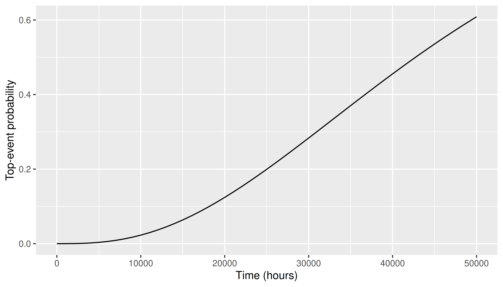

With prob = TRUE, quantify() treats
each column as a failure probability for that basic
event and returns the top-event probability for each
row (assuming independence in the fast implementation).
This vignette shows:
populate().populate() then quantify()db_probs is in
long form (event, probability). populate() replaces
1s in a binary scenario with those probabilities (0 stays 0):
library(tidyfault)
library(dplyr)
library(ggplot2)
library(tidyr)
library(tibble)
data("db_nodes")
data("db_edges")
data("db_outcomes_binary")
data("db_probs")
f <- curate(db_nodes, db_edges) |>
equate() |>
formulate()
db_outcomes_probs <- populate(db_outcomes_binary, db_probs)
knitr::kable(head(db_outcomes_probs, 6), digits = 3)| scenario | DC | AF | SF | BF | NF | AUF | HF | MF |
|---|---|---|---|---|---|---|---|---|
| 1 | 0.00 | 0.1 | 0.00 | 0.15 | 0.00 | 0.00 | 0.00 | 0.2 |
| 2 | 0.00 | 0.0 | 0.08 | 0.00 | 0.12 | 0.00 | 0.00 | 0.2 |
| 3 | 0.05 | 0.0 | 0.00 | 0.15 | 0.00 | 0.00 | 0.00 | 0.0 |
| 4 | 0.00 | 0.1 | 0.00 | 0.00 | 0.12 | 0.00 | 0.04 | 0.0 |
| 5 | 0.00 | 0.0 | 0.00 | 0.15 | 0.00 | 0.06 | 0.00 | 0.2 |
| 6 | 0.05 | 0.0 | 0.00 | 0.00 | 0.12 | 0.00 | 0.00 | 0.2 |
Then pass the probability matrix to quantify():
prob_top <- quantify(f, newdata = db_outcomes_probs, prob = TRUE)
prob_top#> [1] 0.100 0.120 0.050 0.208 0.060 0.164 0.100 0.000 0.208 0.107summary(prob_top)#> Min. 1st Qu. Median Mean 3rd Qu. Max.
#> 0.0000 0.0700 0.1035 0.1117 0.1530 0.2080The next chunk defines illustrative constant failure rates per hour
(same orders of magnitude as the JSS article). For each mission time
t, map rates to cumulative failure
probabilities with the exponential distribution
:
data("it_security_nodes")
data("it_security_edges")
f_sec <- formulate(equate(curate(it_security_nodes, it_security_edges)))
# Illustrative constant failure rates (per hour), as in the paper source
it_security_rates <- tibble::tibble(
DA = 0.25 / 24 / 365,
EP = 0.20 / 24 / 365,
IM = 0.09 / 24 / 365,
LR = 0.13 / 24 / 365,
MN = 0.29 / 24 / 365,
PO = 0.16 / 24 / 365,
PC = 0.22 / 24 / 365,
PM = 0.15 / 24 / 365,
VS = 0.11 / 24 / 365,
WB = 0.17 / 24 / 365
)
rate_names <- names(it_security_rates)
t_hours <- seq(0, 50000, by = 1000)
it_security_projections <- crossing(t = t_hours, it_security_rates) |>
mutate(across(all_of(rate_names), ~ pexp(q = t, rate = .x)))
it_security_projections$outcome <- quantify(
f_sec,
newdata = it_security_projections[, rate_names, drop = FALSE],
prob = TRUE
)
it_security_projections |>
select(t, outcome) |>
head(6)#> # A tibble: 6 × 2
#> t outcome
#> <dbl> <dbl>
#> 1 0 0
#> 2 1000 0.0000325
#> 3 2000 0.000250
#> 4 3000 0.000811
#> 5 4000 0.00185
#> 6 5000 0.00347Plot top-event probability versus time:
ggplot(it_security_projections, aes(x = t, y = outcome)) +
geom_line() +
labs(
x = "Time (hours)",
y = "Top-event probability"
)
| Task | Approach |
|---|---|
| Scenario-specific event probabilities | populate() from binary + long event /
probability table |
| Direct probability scenarios | Data frame of probabilities +
quantify(..., prob = TRUE) |
| Time profiles | Build rows of at each , then same call |
Uncertainty simulation is covered in Simulating uncertainty.